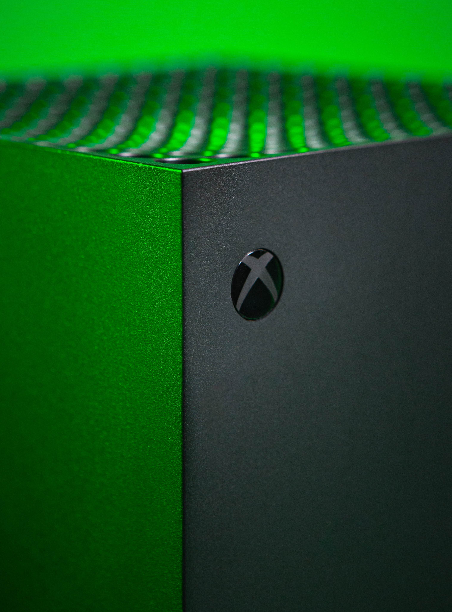

XBOX ONE S
Controle sem fio para XBOX ONE S
(Compatível/Genérico)

Add to Cart
SOBRE
O controle do Xbox One S é altamente compatível com uma variedade de plataformas e dispositivos, o que o torna uma escolha popular entre jogadores de videogame de todo o mundo. Ele é projetado para ser compatível com o console Xbox One, o Xbox One X, o Xbox One S, o Xbox Series X e o Xbox Series S, bem como com o PC com Windows 10. Além disso, o controle do Xbox One S pode ser facilmente conectado a dispositivos móveis, como smartphones e tablets, graças à tecnologia Bluetooth embutida. Isso significa que os usuários podem jogar jogos em dispositivos móveis com o controle do Xbox One S, proporcionando uma experiência mais envolvente e confortável. Para dispositivos que não possuem tecnologia Bluetooth, como o Xbox 360 ou outros consoles de videogame mais antigos, o controle do Xbox One S pode ser conectado usando um adaptador sem fio, que pode ser adquirido separadamente.